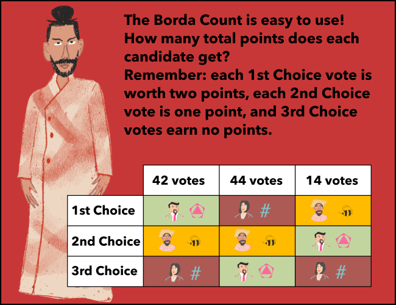

## Chapter 3: The Ghost of Elections Yet to Come I wonder who this new ghost is...
Exercise 2
Move all three sliders into the correct positions.
Correct! Iswar Beekumar is now the winner, depite getting so few first choice votes. What a difference it makes to look at the bigger picture!
The sliders are not in the correct positions yet! Keep working.